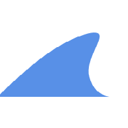

Best AI agents for writing code (2026)
Coding agents that write, edit and refactor code from plain-language requests, in your terminal, editor or browser. We list 492 tools for writing code below, each with a link-checked page, pricing as the maker states it and alternatives.
Updated
492 tools: 338 open source, 19 source-available, 72 free or freemium, 41 paid, usage-based or enterprise, 22 pricing on the maker's site.
Terminal and CLI agents (65)
Cmux
Open source Ghostty-based macOS terminal with vertical tabs and notifications for AI coding agents. Built for multitasking, organization, and programmability
Added
Loop Engineering
Practical patterns, starters & CLI tools for loop engineering with AI coding agents. Design systems that prompt and orchestrate agents (inspired by Addy Osmani and Boris Cherny).
Added
ANUS
A free coding agent in your terminal. It runs on the smartest free model that is up today
Added
Claude Code Tools
Practical productivity tools for Claude Code, Codex-CLI, and similar CLI coding agents
Added
Agmsg
Cross-vendor messaging for CLI AI coding agents — let Claude Code, Codex, Gemini & Copilot talk to each other in one team. Bash + SQLite, no daemon, no framework
Added
Termish
Open source mobile SSH/Mosh terminal for Android and iOS with Herdr integration, SFTP files, remote screen, and native agent chat for Codex-style workflows.
Added
Pinloop
Terminal job board for coding agents: searches millions of hourly-refreshed postings and has an LLM judge each one against your resume and preferences.
Added
PiG
PiG is a faithful Go port of Pi, the open-source terminal coding agent, first developed at Hewlett Packard Enterprise. It keeps Pi's behaviour and extension model while shipping as a single fast Go binary, so you can run the same minimal, hackable coding agent without a Node.js runtime.
Added
Waku
Waku is a native desktop app that gathers your local coding agents in one place. It shows sessions from Amp, Claude Code, Codex, Cursor, OpenCode, Grok and Pi on a single timeline that stays entirely on your machine, so you can follow and switch between agent runs without juggling terminals.
Added
mu
mu is an open-source coding agent with a judgment kernel: a small, fast judge model makes the many routine decisions in each turn so the main model only gets the context it needs. It ships as a command-line tool and a desktop app and aims to keep coding sessions focused and cheap.
Added
OmniRush
OmniRush is a desktop coding agent for Windows, macOS and Linux, with a terminal CLI as well. It works through the files of your own projects, reading code, making edits and running commands, and gives free access to frontier models from a model picker, with GPT 6 Astra as the default. Builds for each platform are published on its releases page.
Added
opencode
Open-source terminal coding agent that works with many model providers.
Added
MCP servers (53)
Jscpd
Copy/paste detector for source code. 220+ languages, Rust engine, SARIF/HTML/badge reporters, GitHub Action, MCP server for AI agents
Added
Ffmpeg Skill
Local video editor for coding agents: 42 FFmpeg tools with a machine-readable contract and an MCP server, for Claude Code, Cursor and Codex. Cut, captions, reframe, loudness, platform exports.
Added
Gortex
High-performance code-intelligence engine for AI agents and IDE, supports 257 languages, multi repositories, based on graph, with access via CLI, MCP Server, and API. AI coding agents teammate.
Added
Proxima
Multi-AI MCP Server - Connect ChatGPT, Claude, Gemini & Perplexity to your coding tools without any API
Added
Alpaca MCP Server
Alpaca’s official MCP Server lets you trade stocks, ETFs, crypto, and options, run data analysis, and build strategies in plain English directly from your favorite LLM tools and IDEs
Added
Senzing MCP
Official Senzing MCP server that grounds AI assistants in Senzing docs and code to map data, deploy the engine, and resolve and link people and company records.
Added
3Dsellers MCP
3Dsellers MCP is a hosted MCP server with more than 150 tools that lets Claude, ChatGPT, Cursor and other AI assistants run eBay, Amazon, Walmart, Etsy and Shopify stores. Agents can manage listings, orders, messages and inventory without code or an eBay developer account.
Added

GrowSurf MCP
GrowSurf's official MCP server lets AI assistants build and manage referral and affiliate programs in GrowSurf. An agent can set up a draft program, adjust rewards and pull participant and referral data for you to review, without clicking through the dashboard.
Added
Keboola MCP Server
Keboola's official MCP server lets AI assistants and coding agents work with a Keboola data project: browse storage tables and buckets, read and write SQL transformations, run and debug jobs and components, and build data flows from a chat. It can run locally or as Keboola's hosted remote server, with access scoped to the project token or OAuth sign-in you grant.
Added
Edgegap MCP
Edgegap's official MCP server lets AI coding agents deploy and run multiplayer game servers on Edgegap's edge hosting network. From the editor, an agent can push server builds, start and stop deployments, check matchmaking and fleet status and read logs, so game developers can manage their online backend in plain language.
Added
SuprSend MCP
SuprSend's official hosted MCP server gives AI agents and coding assistants access to a SuprSend notification workspace. An agent can look up and manage users and lists, inspect and edit notification workflows and templates, and read delivery data across email, SMS, push, Slack and in-app inbox channels without leaving the chat or editor.
Added
Diagrid Catalyst MCP
The Diagrid Catalyst MCP server lets AI coding agents build and operate Dapr Workflows and Dapr durable agents on Diagrid Catalyst, the managed platform for long-running, fault-tolerant agent and workflow apps. Through it an agent can create and inspect workflows, check running instances and manage Catalyst resources from your MCP client. It is the official server from Diagrid, the company behind Dapr, and needs a Catalyst sign-in.
Added
Code review (31)
Diffinery
Open source, agent-first GitHub alternative on your own Cloudflare account: git hosting, pull requests, Actions-compatible CI, and agents with their own accounts.
Added
CodeAF
CodeAF is an open-source software factory from AgentField built to run on open models. It ships ready-made specialist agents you call with slash commands, one to build features like a senior developer, one to audit code for security issues and one to review GitHub pull requests, and spreads the work across a pool of models to balance cost and quality.
Added
Orbi
Orbi is an open-source (AGPL-3.0) software factory for GitHub repositories. When you label a GitHub Issue ai-ready, Orbi implements it in an isolated worktree, opens and reviews pull requests in a separate AI review session that checks acceptance criteria and repairs failing tests, merges the exact reviewed commit SHA, and cuts a tagged GitHub Release when a human applies the ai-release label.
Added
Zozo HQ
Zozo HQ is a coding-agent harness that turns dependency-ready issues from GitHub or matched Jira Cloud and Bitbucket Cloud into reviewable pull requests using isolated git worktrees, Claude Code, Codex or OpenCode via OpenRouter, and structured human clarification before anything merges.
Added
agent-manager
agent-manager is a terminal app built on tmux for running many AI coding agents at once. It shows live status for Claude Code, Codex, OpenCode, Gemini, Grok, Cursor and other sessions in a foldable project tree, adds a quick prompt bar, and has a diff reviewer whose line comments are sent straight back to the right agent, on macOS, Linux and Windows.
Added
Open Code Review
Alibaba's AI code review CLI that combines deterministic pipelines with an LLM agent to post line-level comments on Git diffs, using OpenAI or Anthropic models.
Added
Open SWE
LangChain's asynchronous coding agent that takes work from GitHub issues, Slack or Linear, implements it in an isolated sandbox and opens a pull request.
Added
Hunk
Review-first terminal diff viewer for checking what coding agents changed.
Added
Plannotator
Visually annotate and review coding-agent plans and diffs, then send feedback back to the agent.
Added
Emdash
A free, open-source agentic development environment (YC W26) for running Claude Code, Codex and other coding agents in parallel, each in its own worktree, then reviewing diffs, PRs and CI in one place.
Added
ThinkRail
JetBrains' lightweight agentic IDE that pairs you with the pi coding agent, with isolated git-worktree workspaces, editor tabs, terminals and diffs.
Added
sem
Semantic layer on top of Git that diffs, blames and traces impact by function and class instead of by line, with an MCP server for coding agents.
Added
Running many agents in parallel (30)
Oil UI
UI design skill for Claude Code, Codex and other coding agents that explores several distinct visual directions, compares them side by side and refines the chosen one against real screenshots. Free open-source skill.
Added
Oh My Agent
A specialist team for the coding agent you already use: 12 roles, 21 workflows and 33 skills that plan, build in parallel, review and debug, leaving plans, ADRs and results as files. Gates wait for your own tests.
Added
Concord
Concord lets coding agents message each other and work together in a shared workspace. Agents running in different tools or on different machines can hand off tasks, ask each other questions and review each other's code in real time through its MCP server, so a team of agents can coordinate without you copying messages between terminals.
Added
Foremerge
Foremerge is an open-source coordination layer for teams of coding agents, built on top of Git. Each agent keeps its own worktree, but they share what they intend to change, claim the parts of the code they are working on and verify each other's change sets, so conflicting plans are caught before they turn into merge conflicts. It also works over MCP.
Added
CCC
CCC (Claude Command Center) is a free, source-available local dashboard for macOS, Linux and Windows that puts every Claude Code, Codex, Cursor and five other coding-agent sessions on one visual board, highlights which session needs your input, tracks token usage and lets sessions continue on $0 models when rate limits hit.
Added
Pudding
Pudding is a desktop AI workspace from Teatak for macOS and Windows 11 that connects your own model API keys or local Ollama models with a built-in browser, file and command tools, a Studio for Markdown documents and typed tables, scheduled tasks, parallel subtask delegation and MCP plugins. Every tool call is shown in the conversation with per-project permission controls (Ask, Auto or Full access).
Added
Orca
Agent development environment for running a fleet of parallel coding agents on your own subscriptions and reviewing their work.
Added
Oh My OpenAgent (OmO)
Agent harness add-on (OmO) for OpenCode and Pi that runs multi-model coding agent teams with memory, planning and parallel workflows.
Added
Herdr
Runtime for running and managing many coding agents side by side.
Added
Oh My Claudecode
Multi-agent orchestration layer for Claude Code that coordinates teams of specialized agents.
Added
Paseo
Orchestrate multiple coding agents from desktop and mobile.
Added
Superset
Agentic IDE for orchestrating many coding agents in parallel.
Added
Sandboxes and secure execution (27) See the full list →
Dormice
The SQLite of agent sandboxes — self-hosted, E2B-compatible. One machine, sandboxes that live forever, idle costs nothing
Added
Airecon
AIRecon is an autonomous cybersecurity agent that combines a self-hosted Large Language Model (Ollama) with a Kali Linux Docker sandbox and a Textual TUI. It is designed to automate security.
Added
Fence
Lightweight, container-free sandbox for running commands with network and filesystem restrictions
Added
Sandboxd
Open-source, self-hosted AI app builder — an agent builds real apps in isolated sandboxes on your own server, each live at a preview URL. Self-host in one command.
Added
PGX
Lightweight Postgres-compatible database written in Rust that gives every coding agent its own disposable Postgres: one runtime hosts thousands of isolated databases, installs as a Claude Code plugin or Agent Skill.
Added
Strands Box
Open source sandbox from the Strands Agents team that pairs OS-level isolation with default-deny Dogwood policies over shell, Python, egress, and MCP calls.
Added
Fly.io MCP
The Fly.io MCP server is one endpoint that connects your coding agent to Sprites, Fly.io's sandboxes for agents, and to your Fly.io apps. The agent can build and test freely in a Sprite, then move the result to a Fly Machine in production whenever you are ready, with the rest of Fly's cloud available along the way.
Added
Fileaify
Fileaify is a project workspace that plugs into the coding agent you already use, such as Claude Code, Codex, Cursor or Windsurf. You give the agent one URL (fileaify.com/agent) or the hosted MCP connector, approve its access, and it finds the project's documentation, architecture decisions, roadmap and known issues in each new conversation, so you don't have to explain the project again, even when you switch agents. Credentials stay in a vault: the agent can run approved actions with them without ever seeing the keys, sensitive actions need a human's approval, and paid tiers add a sandboxed executor where the agent can actually run work. The agent also writes its contributions back into the project docs, following your review rules. A live demo project lets you try it without installing anything.
Added
Pydantic Deep Agents
Self-hosted terminal AI assistant and Python framework on Pydantic AI, with tool calling, sandboxed execution, multi-agent teams and checkpoints.
Added
Cloudroom
Cloudroom runs Claude Code, Codex, Pi and other coding agents in the cloud, each in its own isolated sandbox on its own Git branch, using your own model logins; the Rust core is open source to self-host, and a desktop app manages local and cloud agents.
Added
NVIDIA OpenShell
Sandboxed runtime for autonomous agents with declarative YAML policies on file, network and credential access.
Added
OpenSandbox
Secure, fast sandbox runtime for AI agents to run code.
Added
Memory (23) See the full list →
Zerostack
Lightweight coding agent written in Rust, optimized for memory footprint and performance
Added
ECC
The agent harness performance optimization system. Skills, instincts, memory, security, and research-first development for Claude Code, Codex, Opencode, Cursor and beyond
Added
Waku Agent
Waku Waku! Waku Agent is a local-first AI agent harness you actually own, including loop, memory, eval, all in code built to stay legible as it grows
Added
superagnt
superagnt is a hosted MCP server and REST API that gives AI agents one key for the tools they lack: Instagram, TikTok, LinkedIn, YouTube, Reddit and X data, web scraping to clean markdown or JSON, email finding and lead enrichment, plus a real Postgres database, memory, schedules, queues and an inbox. Credits are charged only on successful calls, and it plugs into Claude, Cursor, Codex and other agents.
Added
Kestra
Kestra is an open-source, event-driven orchestration and scheduling platform where workflows are declared in YAML or built in a no-code editor. It includes an AI Agent task that gives flows an LLM with memory and tools, supports nested agents and the Agent-to-Agent (A2A) protocol, and can expose any flow as a tool to external AI agents through its MCP server. It runs in the cloud, on-prem or air-gapped and is Apache 2.0 licensed.
Added
MemoraX Code
MemoraX Code is a shared memory layer for coding agents such as Codex, Claude Code, OpenCode, Cursor, Trae and DeepSeek Harness. It recalls prior engineering knowledge, captures lessons from finished work, keeps repository knowledge and architecture history up to date, and carries your procedures and preferences into new sessions, bringing back only the memory relevant to the task at hand. It needs Node.js 20 or later and is MIT licensed.
Added
1Password for Agents
1Password for Agents lets personal AI agents sign in to your accounts without ever seeing your passwords or one-time codes. When a supported agent reaches a sign-in page, it asks for a credential from your vault; you approve the request, and 1Password fills it straight into the site, so the secret never enters the model or its memory. You can see and manage which agents have access to what. It launched with integrations for agents such as Claude Duet, ChatGPT Work and dots, Meta's Muse and Grok Bot, and needs a 1Password plan.
Added
Beads
Issue-tracking memory for coding agents so they can keep track of long-running work.
Added
MiMo Code
Xiaomi's terminal coding agent with persistent project memory across sessions; works with any major model provider and is tuned for Xiaomi's MiMo models.
Added
Compozy
Operating system for AI agents that turns Claude Code, Codex, Gemini CLI and Cursor into a team with task handoff, loops, jobs and shared memory.
Added
Sno Station
Sno Station turns the coding agents you already use (Claude Code, Codex, Cursor, Hermes, OpenClaw) into one squad on your machine with shared memory, and its Self Learning reviews their sessions and proposes skill-file fixes you approve.
Added
Dosu
Knowledge infrastructure that keeps docs, specs and agent memory current with your code for teams and coding agents.
Added
Codebase context and code search (22)
Dagger
Automation engine to build, test and ship any codebase. Runs locally, in CI, or directly in the cloud
Added
nanocode
nanocode is a small SDK for embedding frontier-model agents inside your own apps and tools. It provides the agent loop, tool calling and session handling for models such as Claude and GPT in a compact codebase, so developers can ship a capable embedded agent without adopting a heavy framework.
Added
AOCI-CODE
AOCI-CODE keeps a persistent, Git-versioned map of your whole codebase and database schema that your coding agent writes and a local MCP server governs. Agents in Codex, Claude Code, Cursor or OpenCode read the map once and know what each file is for, what it depends on and what must not break, instead of re-reading the repo on every task. It can index an existing codebase of up to about half a million lines and report how well it knows each area before taking over development.
Added
Graphify
Turns a codebase plus its docs, SQL schemas, configs and PDFs into a knowledge graph that coding agents can query.
Added
Understand-Anything
Turns any codebase, knowledge base or docs folder into an interactive knowledge graph you can explore and question, working inside Claude Code, Codex, Cursor, Copilot and Gemini CLI.
Added
Context Mode
Context window optimizer for coding agents that sandboxes tool output and persists session memory.
Added
code-review-graph
Local code knowledge graph built with Tree-sitter that serves compact review context over MCP, so coding agents read only the files a change touches.
Added
Repomix
CLI and web tool that packs an entire repository into a single AI-friendly file (with an MCP server) so coding agents and LLMs get full codebase context.
Added
HumanLayer
Tools for getting coding agents to solve hard problems in complex codebases.
Added
Claude Context
Zilliz MCP plugin that adds semantic code search to Claude Code and other coding agents, using your whole codebase as context.
Added
Trail Code
Context layer that makes Claude Code, Cursor, Codex and other coding agents faster and cheaper on large codebases.
Added
Repowise
Codebase intelligence tool that indexes code, call graph, git history and docs locally and answers questions for you and your coding agent over MCP.
Added
IDE and editor agents (13) See the full list →
Erd Editor
Design database schemas as ERDs in your browser, VS Code, JetBrains IDEs or Obsidian. Import SQL, DBML and GraphQL, export DDL and code, and let coding agents edit live over MCP
Added
Zed
High-performance, multiplayer code editor from the creators of Atom and Tree-sitter, with built-in AI agent editing for macOS, Linux and Windows.
Added
Cline
Autonomous coding agent inside VS Code with step-by-step approvals.
Added
Cursor
AI code editor with an agent mode and background agents.
Added
Roo Code
Discontinued: the open-source VS Code agent with custom modes (architect, code, debug) was shut down on May 15, 2026 and its repo archived; the team now builds Roomote, and roocode.com redirects there. Cline and the community fork ZooCode are the suggested alternatives.
Added
Jupyter AI
Official JupyterLab extension that connects AI agents and chat to notebooks.
Added
OpenSumi
Framework for building AI-native IDE products, with an MCP client and agent features.
Added
Runcell
AI agent for Jupyter notebooks that writes and runs code cells.
Added
TRAE
AI coding IDE and agent that works alongside you in your editor to write, edit and run code.
Added
Windsurf
AI IDE with the Cascade agent, now rebranded as Devin Desktop after Cognition acquired Windsurf (windsurf.com redirects there).
Added
Serena
MCP toolkit that gives coding agents semantic code retrieval and editing, like IDE features.
Added
FastGPT
AI agent building platform with knowledge-base RAG, data processing and a visual workflow editor for deploying question-answering and automation apps.
Added
Onlook
An open-source visual editor for React and Tailwind apps where you design on a canvas and an AI agent writes the code. Edit layouts like in Figma, then export clean code to your own repo.
Added
Rules, skills and config (12) See the full list →
Anti Slop
Rules for an AI coding agent to filter out generic AI-generated UI designs, text, and code
Added
ScienceClaw
Verifiable program-level self-evolution for AI-for-Science agents: Skills and typed Operators grow from replay-verified executions
Added
Foreman
Foreman from ThruWire supervises coding agents with fast decision models. You give it a ticket, spec or bug report and it runs Codex, OpenCode, Hermes or LangChain's Deep Agents Code as workers, or attaches to supported sessions such as Pi, then independently judges whether the job meets the original requirements, whether the test evidence is enough and when verification or human input is needed. Extra checks can be configured for your workflow, and it is MIT licensed.
Added
Gentle AI
Configures the coding agents you already use with shared rules, skills and settings.
Added
shadcn/lint
Linter for Tailwind design systems from shadcn that turns your design rules into checks coding agents can run and fix against.
Added
Ruler
Applies one set of rules to all your coding agents.
Added
LibreChat
Self-hosted, multi-user AI chat platform with agents, MCP, skills, code interpreter and support for OpenAI, Anthropic, Gemini, AWS, Azure and many more providers.
Added
Universal Modder
Skills, tools and a shared knowledge base that let Claude Code and other coding agents mod PC games you own, from engine recon to in-game testing.
Added
Voyager
Research agent that explores Minecraft on its own, writing and reusing code skills to learn as it goes.
Added
OpenScience
Research agent workbench that reads the literature, writes and runs code and experiments and logs every step, with skills and connectors for databases like PubMed, UniProt and arXiv.
Added
Telekinesis Agentic Skill Library
Python library of 250+ perception, vision and robotics skills plus a Physical AI agent that turns natural-language prompts into reviewable robot code.
Added
Ultralytics Agents
Visual canvas in Ultralytics Platform that chains YOLO models, vision-language models, conditions and actions like Slack alerts, plus official agent skills that let coding agents train, tune and export YOLO models.
Added
Planning and task tracking (11) See the full list →
Agiloop
Agiloop is an AI-orchestrated software development platform that connects product requirements, architecture planning, AI coding, testing and production insights in one continuous loop, including a free Code Health and Readiness Assessment for existing repositories.
Added
Massvai
Massvai is an AI full-stack app builder for Next.js, TypeScript, Tailwind CSS and Supabase. From a plain-language prompt or reference screenshot, its coding agent plans the architecture, writes exportable TypeScript code with a live HMR preview, wires Supabase authentication and database flows, syncs the repository to GitHub and deploys to Vercel.
Added
Vibe Kanban
Kanban board for planning and running tasks with Claude Code, Codex and other coding agents.
Added
Planning With Files
File-based planning for coding agents, keeping Markdown plans that survive crashes and session resets.
Added
Backlog.md
Markdown task board in your Git repo for coordinating work between people and AI agents.
Added
Agent Teams
Free desktop app where teams of AI agents take tasks from a kanban board, message each other and review each other's work.
Added
Nimbalyst
Visual workspace for working with coding agents like Claude Code on docs, code and plans.
Added
agenticSeek
Fully local autonomous agent that browses, codes and plans without paid APIs.
Added
Raven
Host agent that plans complex jobs as task graphs and coordinates built-in and third-party agents for research, coding, design and on-call work.
Added
Emergent
Vibe-coding platform where AI agents plan, build and deploy full web and mobile apps through a chat conversation.
Added
Empyre
Empyre turns a plain-language business brief into a running software company: eight AI agents (CEO, CTO, CMO, CFO and more) build it, deploy it to its own HTTPS address and keep operating it, shipping code, marketing and support with spend approval; plans $49, $149 and $299 a month.
Added
Testing and QA (8) See the full list →
QA Agent
QA Agent is an open-source Playwright library for AI browser regression testing. An agent writes, runs, or maintains tests and reports what broke.
Added
Agentic QE
Agentic QE Fleet is an open-source QA platform that works with coding agents to test software
Added
TestSprite
TestSprite is an agentic testing tool that writes and runs end-to-end tests after code changes
Added
Vinsi
VINSI is the all-in-one AI SaaS platform for premier AI voice agents, CX automation, CRM, workflows, ticketing, QA, analytics, and more. We deliver a powerful, secure AI ecosystem built to help you dominate any industry
Added
OpenHarness
OpenHarness from Autonomous is a native command center for running coding agents side by side, including Claude Code, Codex, Cursor, OpenCode, Devin, Amp and Copilot. It links your laptop, home server and GPU box into one window with a password instead of SSH keys or port forwarding, keeps code and keystrokes end-to-end encrypted through its relay, and is keyboard first. Agents keep working when you close it, and it extends beyond code to CAD, circuits, robots, games and music.
Added
agent-qa (Vostride)
A self-improving AI QA agent with persistent memory that tests web, Android and iOS apps from plain-English test steps, for developers and coding agents.
Added
Encord Agents
Encord's agents that plug foundation models or your own models into labeling workflows to pre-label, segment, track, route and QA image, video and multimodal data, with a no-code catalog and an open-source SDK.
Added
Momentic
AI testing platform with an AI QA agent that runs and maintains plain-English tests and reports bugs with repro steps.
Added
Token usage and cost tracking (8) See the full list →
Codeburn
Free, local tool to track AI coding token usage and cost across 37 tools and agents (Claude Code, Cursor, Codex, Gemini and more), by model, project, and task. npx codeburn
Added
rtk
A CLI proxy that sits between coding agents and your shell and trims noisy command output before it reaches the model, cutting token use on everyday commands like tests, builds and git. Free and open source, with an RTK Pro tier for teams.
Added
Tokscale
Tracks token usage across AI coding agents from your terminal.
Added
abtop
htop-style monitor for Claude Code and Codex sessions and token use.
Added
Jevgrep
CLI that finds relevant repo files and excerpts from natural-language questions for coding agents; claims ~40% cheaper agent runs.
Added
Weave Router
An open-source LLM router for Claude Code, Codex and other coding agents that sends each request to the cheapest model that still meets your quality bar, cutting model spend.
Added
jCodeMunch MCP
MCP server for symbol-level code exploration that cuts token use.
Added
HiRoute
HiRoute, from the Higress team, is an open-source local model router for long-running agents like Codex and Claude Code: it hands routine stages to cheaper models, saves your strongest model for hard steps and keeps a record of each decision.
Added
Penetration and security testing (7)
Redamon
Open-source, self-hosted AI penetration testing framework: maps your attack surface into a graph, autonomously exploits it from a Kali sandbox with human approval gates, and opens PRs that fix what.
Added
Aletheore
Aletheore audits code repositories and backs every finding with evidence. Its deterministic scanner looks for leaked secrets, vulnerable dependencies and dead code, it can watch live endpoints and draw architecture maps, and it reviews pull requests automatically through a GitHub Action. A built-in MCP server lets coding agents run the same audits.
Added
0.security
0 is an open, self-improving AI operating system for offensive security work. Its agents investigate code and binaries for vulnerabilities, test defenses, verify findings with working proofs and help fix the issues, and the team behind it publishes the advisories it has found in real open-source projects.
Added
CyberStrike
Terminal agent for authorized penetration testing that runs recon, vulnerability discovery and reporting with specialized security agents on your own LLM.
Added
Mantis
Google's toolkit for AI coding agents to autonomously find, reproduce and patch software vulnerabilities in isolated environments.
Added
Rogue
Agent evaluator and red-team tool that probes your agent with test conversations and attacks and reports pass or fail against your policies.
Added
Octane
Agentic security analysis that finds exploitable vulnerabilities in mission-critical code, including DeFi smart contracts.
Added
Autonomous and cloud coding agents (5)
OpenHands
Open-source platform for autonomous coding agents.
Added
BackAnt Kairos
Backant's Kairos, an autonomous developer that runs Claude Code against your repository.
Added
Devin
Cognition's autonomous software engineer that takes tickets and opens PRs.
Added
SWE-bench
Benchmark that tests whether language models and coding agents can resolve real GitHub issues, with multimodal and verified variants.
Added
OpenMeld
An open-source collaboration system where people, cloud agents and coding agents such as Codex, Claude Code and Cursor share context and pick up each other's work.
Added
More tools (177)
PI Desktop
Local-first AI coding agent desktop: Electron + Rust host core + pi Agent Harness + user-installable plugins
Added
Clawd On Desk
A pixel desktop pet that watches Claude Code, Codex, Cursor & other AI coding agents — so you don't have to
Added
Modlens
The first vision plugin for DeepSeek Harness, and the vision bridge for every text-only coding agent. Paste an image, get structured JSON evidence (OCR, layout, semantics).
Added
Adhd
ADHD — a skill for coding agents. Tree-of-thought with pruning, built on the Claude & Codex Agent SDK.
Added
Rapid MLX
Rapid-MLX is an open-source (Apache 2.0) OpenAI- and Anthropic-compatible LLM inference server for Apple Silicon, built on MLX, focused on reliable tool calling for coding agents. Up to 4× faster.
Added
Stop That Shit
Stop That Shit（ ）｜ Codex/GPT Hook + Skill Guard： AI coding agent 、 。 A multi-platform Hook + Skill Guard for AI coding agents in Codex/GPT workflows: stop unrequested hashes, checksums, and task-scope creep
Added
Teaql Agent Kit
A model-driven harness for AI coding agents: semantic modeling, app generation, progressive API Assist and evidence-based verification
Added
Better Harness
An open-source Harness Engineering platform for coding agents—define harnesses as code, run controlled experiments, inspect evidence, and compare outcomes. Turn task evidence into actionable team and.
Added
Zeroshot
Open-source orchestration for coding agents. Define your own workflows, reviewers and repair loops.
Added
Cc Safety Net
A pre-execution guard for AI coding agents. It blocks destructive Git and file system commands, plus common attempts to access sensitive files, before a tool call runs.
Added
Agtx
The blackboard for coding agents - agentic development environment for claude code, codex, cursor, opencode, grok and more
Added
Spec Kitty
Spec-Driven Development with organizational governance. Specs tell AI agents what to build; Charter governs how they build it.
Added
GitHub repos (399)
| Repo | GitHub stars | Licence | Last push |
|---|---|---|---|
| 394,850 | MIT | 2026-10-27 | |
| 291,617 | — | — | |
| 222,192 | MIT | 2026-10-27 | |
| 208,741 | Sustainable Use License (fair-code; .ee files under the n8n Enterprise License) | 2026-10-27 | |
| 159,688 | Modified Apache License 2.0 with additional conditions | 2026-10-27 | |
| 156,060 | MIT | 2026-10-22 | |
| 153,533 | Proprietary (All rights reserved; Anthropic Commercial Terms of Service) | 2026-10-26 | |
| 149,277 | MIT | 2026-10-27 | |
| 136,588 | Apache License 2.0 | 2026-10-26 | |
| 131,122 | Apache License 2.0 | 2026-10-27 | |
| 118,193 | MIT | 2026-10-27 | |
| 108,564 | Apache License 2.0 | 2026-10-26 | |
| 107,615 | MIT | 2026-10-27 | |
| 103,565 | Apache License 2.0 | 2026-10-26 | |
| 92,278 | — | 2026-10-27 |
Top 15 of 399 by stars. Stars and licence come from each repo, checked when the listing was last verified.
Related tasks
Popular with: Developers · Open-source maintainers · Related searches: Free AI coding agents with a free plan · Open-source AI coding agents
Tools are matched to tasks by category, use cases and what each tool says it does. Missing one? Submit it free.
All tools on this page
Open Interpreter · Warp · Aider · Codewhale · Oh My Pi · Crush · Qwen Code · Kilo Code · opcode · CloudCLI · Terax · Munder Difflin · mini-SWE-agent · coucou · TUIOS · Entire CLI · AutoDev · gptme · Grok CLI · Toad · Nanocoder · nodeterm · Intelligent Terminal · Ante · Zero · Wake · CLI Agent Orchestrator · tty7 · Reason Network · luvus · hax · Coddo · Orke · Amp · Factory · skills.sh · Magpie · opencodex · Botpress · Agents CLI · OpenKnowledge · Open Terminal · OpenGAP · HOL Guard · Libretto · MyShell · Vectoree · HyperFrames · Agentic Scientist · PhoneUse · MobileBuildMCP · 21st Magic MCP · CodeGraphContext · shadcn/ui MCP Server · ripwire · Next.js DevTools MCP · Svelte MCP · Cypress Cloud MCP · Headroom · Context7 · Chrome DevTools MCP · Activepieces · Framelink Figma MCP · GitMCP · Observal · Paper2Agent · Figma Console MCP · Unla · Figma MCP Server · Azure DevOps MCP · Grounded Docs MCP · MATLAB MCP Server · Sentry MCP · SonarQube MCP Server · BrowserStack MCP · Buildkite MCP · LaunchDarkly MCP · Stack Overflow MCP · Unleash MCP · DevCycle MCP · BetterClaw · CircleCI MCP · Encord Merlin · Pimlico AI · Sonatype MCP · IDA MCP (Hex-Rays) · Openlayer MCP · PR Lens · Lody · Kodus · OpenQodex · Sphinx · Muxin · Roomote · Baz · CodeRabbit · Coldtea · cubic · Greptile · Jules · GitHub MCP Server · Qodo · Shippie · Superlog · GitKraken MCP · OpenComputer · Agent Orchestrator · Worktrunk · ZCode · Mission Control · Container Use · golutra · Maestro · MonoCode · Zeron · FuXi · Vicoa · Shipyard · Imbue · Mirror CLI · Conductor · Verdent · Dodaios · LayerFS · E2B · CubeSandbox · microsandbox · Fragments · AIO Sandbox · agentOS · nono · Judge0 · ArcBox · forkd · Agent Safehouse · Perplexity SPACE · Cloudflare Sandbox SDK · Tensorlake · Modal · Deer Flow · TencentDB-Agent-Memory · AgentMemory · ai-memory · Beacon · Zeroboot · projectmem · Graphicle · Guaca · Anchor Action Index · Semble · Potpie · Code-Graph-RAG · LazyCodex · SocratiCode · CodeBoarding · Gemini MCP Tool · Augment Code · CLI-Anything · Codebase Memory MCP · Agentic Coding Flywheel Setup · Ovis · Aegis · 9router · Fresh Start · Switch · Code Mode · Duckle · Mirobody · Okou · Nekro Agent · MCP Gateway Registry · OpenRath · Arcjet Js · Hugo · KAIA · Odysseus AI · Tofu · Scrawl · Miqayel AI · Elephant-Goldfish Model · ml0x · Machinist · Paritok · TapQ · Userpilot Agent Analytics · BAND · Goose · DeepSeek-Reasonix · Tabby · Task Master · Happy Coder · jcode · Coder · DeepCode · React Doctor · OpenChamber · Oh My OpenCode Slim · Ralph for Claude Code · Atlas · SuperPlane · OpenRig · CodeCompanion.nvim · GitHub Agentic Workflows (gh-aw) · MonkeyCode · Integuru · Kiro Crew · Kungfu · Command Code · Codeg · Squad · Ralph Orchestrator · HolyClaude · AgentsMesh · Agor · Reticle · Repo Prompt · Tov · Frontman · Cobalt · GitHub Copilot · LobeHub · Flowise · MindsHub · DSPy · ChatDev · GPT Researcher · smolagents · Sim Studio · Stagehand · NocoBase · MaxKB · Maxun · InsForge · Feynman · BAML · PraisonAI · Astron Agent · OpenEvolve · GLM-5 · Unstract · Talk to Figma MCP · Kun · Baserow · Nexent · DevOpsGPT · PySpur · UltraRAG · OpenAgent · Wigolo · VibeSDK · AstronRPA · Agent Device · DeepAnalyze · Langroid · LeanCTX · LazyLLM · vocode · HarnessRouter · Playwright Skill · Ax · Pinvou Agent · BoxLite · Yuanjing Wanwu · Skales · Orkas · OpenAdapt · OpenLore · AIDE ML · Co-op Anything · Ref · ByteChef · Eleven · GoRaven · BuildShip · Giselle · ThinkWatch Lite · TryVoice · Taskade AI Agents · Cicero · Abacus.AI ChatLLM · Appian · Ask-AI · Auquan · Blockscope · Boomi · BrowserAct · ByteFlow · Cassidy · Cod3x · CustomGPT.ai · Delve · Dot · Duckie · Fellou · Genspark · Griffin AI · Gumloop · Is My Agent Safe · Jotform AI Agents · kapa.ai · Kodif · Leap · Lindy · LM Studio · Magia Trade · Make · Mindflow · Momen · Monobot.AI · Ninja AI · Nora · Relevance AI · SnapLogic · StackAI · Toolhouse · Tray.ai · Turnkey · TypeSafe Jev · Voiceflow · wren-guard Pro · Zapier Agents · pooled